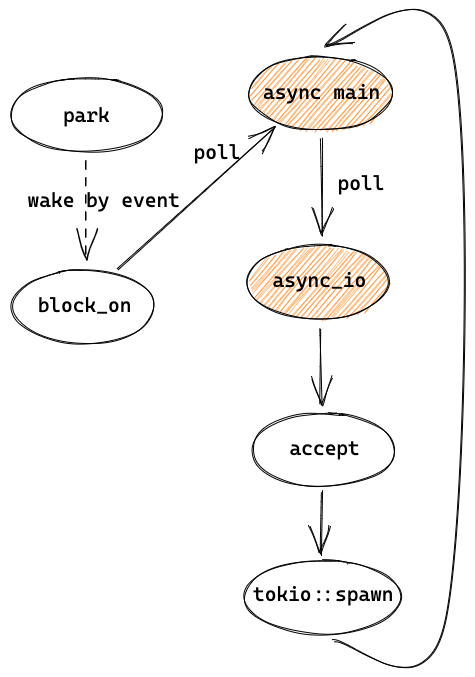

介绍
相比其他语言，Rust 的异步很有趣、很强大、很独特。而 Tokio 是 Rust 社区的一个非常流行的异步 runtime 实现，非常值得学习。本文会讲解 Tokio 的内部源码实现，以及一些精彩设计。
感谢 @aquarhead, @tyrchen 和 @ZhangHanDong 的建议。
Rust async 简介
在讲 Tokio 之前，不得不先讲一下 Rust 的异步编程，因为和很多语言不太一样。
对于 Rust Async 熟悉的可以跳过这章
对于 Erlang/Go/Nodejs 等语言，异步 runtime 都是内置于语言本身，开箱即用。但 Rust 作为一门系统级语言，并不想局限于一种实现，于是另辟蹊径，提供了 Future/async/await 等基本功能，实现了类似于 Nodejs Promise 的 task ，但把调度和运行 future 交给第三方实现，如 Tokio、async-std。例如下图，左边是 Rust 语言提供的基本功能，驱动了 task 的执行，而右边是第三方 runtime 需要实现的调度机制。
 https://excalidraw.com/#json=5287000177377280,_EjA-elJg02sgC71T8uXLQ
https://excalidraw.com/#json=5287000177377280,_EjA-elJg02sgC71T8uXLQ
Future, async, await
Future 是 Rust 的一个 trait（类似于 interface），表示一个异步任务（task），是"零成本"(zero-cost abstraction)的轻量级线程（类似 promise），会被交给 runtime 调度和执行。Future trait 需要实现 poll 这个方法，在 poll 中判断这个任务是否执行完，如果执行完（比如 IO 数据准备好），就返回 Ready，否则返回 Pending。
我们的代码不会直接调用 poll，而是通过 Rust 的关键字 .await 来执行这个 future，await 会被 Rust 在编译时生成代码来调用 poll，如果返回 Pending 则被 runtime 挂起（比如重新放到任务队列中）。当有 event 产生时，挂起的 future 会被唤醒，Rust 会再次调用 future 的 poll，如果此时返回 Ready 就执行完成。
除了直接实现 Future trait 以外，还可以通过 async 把一个 function 或者一个代码 block 转变为一个 Future。在 async 中可以调用其他 future 的 .await 来等待子 future 变成 Ready 状态。
struct HelloFuture { ready: bool, waker: ... } impl Future for HelloFuture { // 1. custom Future(leaf) fn poll(self: Self, ctx: &mut Context<'_>) -> Poll<()> { if self.ready { Poll::Ready(()) } else { // store waker in ctx somewhere Poll::Pending } } } async fn hello_world() { // 2. generated Future by async println!("before await"); HelloFuture { ready: false }.await; // 3. HelloFuture is pending, then park println!("Hello, world!"); } fn main() { let task = hello_world(); // 4. task is a generated Future // ... reactor code is ignored here, which will wake futures runtime::spawn(task); // 5. task is run by runtime }
例如上边这段代码，HelloFuture 是一个通过实现 Future trait 实现的 Future， hello_world 是 async 函数变成的 Future，并被传入 runtime 来执行（这里 runtime::spawn 只是示例）。hello_world 中又调用了 HelloFuture.await，因为 ready 是 false，所以 hello_world 会被挂起，直到 HelloFuture 被唤醒。
上述的这种嵌套的 futures 可以组成一个 Future 树，一般叶子节点都是由 runtime（如 Tokio） 自己通过实现 Future trait 来实现的，如 io、tcp、time 等操作。非叶子节点则由库代码或用户通过 async 调用不同的子 future 实现的。root future 会被提交给 runtime 来执行，runtime 通过调度器来调用 root future，然后 root 再一级级往下调用 poll。
 https://excalidraw.com/#json=6697978081312768,u9VYjoGonibMqcPX8VWeGg
https://excalidraw.com/#json=6697978081312768,u9VYjoGonibMqcPX8VWeGg
生成状态机和 stackless
Future 会被 Rust 编译为一个状态机的代码，当执行到子 Future 的 await 的时候，会进入下一个状态，所以下次执行时可以从 await 的地方继续执行。因此 Rust 不需要预先为 future 分配独立的栈（stackless），是 zero-cost abstraction。但也因为如此，future 只能在 await 的地方调度走，是 cooperation scheduling（协同调度），而且很难做抢占式调度，这点和 stackful 的 Go/Erlang 不一样。状态机的示意伪代码如下：
#![allow(unused)] fn main() { use std::{future::Future, task::Poll}; enum HelloWorldState { Start, Await1(HelloFuture), Done, } impl Future for HelloWorldState { type Output = (); fn poll(&mut self: HelloWorldState, ctx: &mut Context<'_>) -> Poll<Output> { match self { HelloWorldState::Start => { println!("before await"); // code before await let hello = HelloFuture { ready: false }; *self = HelloWorldState::Await1(hello); self.poll(); // re-poll after first state change }, HelloWorldState::Await1(hello) => { match hello.poll(ctx) { // await by poll Poll::Pending => { Poll::Pending }, Poll::Ready(output) => { println!("Hello, world!"); // code after await *self = HelloWorldState::Done; let output = (); Poll::Ready(output) } } }, HelloWorldState::Done => { panic!("can't go here") } } } } }
在这段示意代码中， async fn hello_world() 被变成了一个 enum 的状态和它的 poll 方法，初始状态为 Start，第一次执行 poll 时会执行 .await 之前的代码，并改变当前状态为 Await1 。下次再被 poll 时，因为状态是 Await1，会进入第二个分支并执行 hello.poll()，如果 hello 还没完成，会返回 Pending，否则会执行 .await 之后的代码。
可以看到，Rust 主要提供了这些基础的工具和代码生成，而如何管理 OS 线程、如何调度任务、如何 poll events、如何唤醒 pending 的 tasks 等等，都需要 runtime 自己实现，可以实现为一个类似于 Erlang/Go 的 N:M 模型，也可以实现 Nodejs 这样单线程事件驱动的模型。
需要注意的是，如果使用了 async，很多标准库中的同步阻塞的库就不应该直接使用，否则会阻塞其他 task 的调度和运行。比如执行 std::println! 或者执行纯 CPU 计算的时候，因为没有 .await 这样的 yield point，所以无法被调度走，当前 OS 线程必须等到这个操作完成，执行到下一个 yield point 后，才能执行其他 task，这段时间内这个 OS 线程中的任务都被阻塞了。
一般 runtime 会封装好一些常用的模块，如 IO/TCP/timer 等等，写代码时注意使用 runtime 封装的而不用标准库的就行。像 Tokio 这样的 runtime 还提供了专门用来运行这类阻塞操作的专用线程池（类似于 Erlang 的 dirty scheduler），从而不影响 reactor 或者其他 task 的执行。
参考
Tokio 概览
初识 Tokio
Tokio 是一个 Rust 异步运行时库，底层基于 epoll/kqueue 这样的跨平台多路复用 IO 以及 event loop，目前正在支持 io_uring。它的 scheduler 和 Erlang/Go 实现的 N:M threads 类似，线程会执行 Task，可以充分利用多核。Task 是 Rust 基于 Future 抽象出的一种绿色线程，因为不需要预先分配多余的栈内存，可以创建大量 task，很适合做 IO 密集型应用。
虽然如 1.1 所说，Rust 本身不提供异步运行时，但因为 Rust 强大的 macro，我们可以非常方便地使用如 Tokio 这类第三方的 runtime。
#[tokio::main] async fn main() -> Result<(), Box<dyn Error>> { let listener = TcpListener::bind("127.0.0.1:8080").await?; // listen loop { let (mut socket, _) = listener.accept().await?; // async wait for incoming tcp socket tokio::spawn(async move { // create async task and let Tokio process it let mut buf = vec![0; 1024]; loop { // read and write data back until EOF let n = socket.read(&mut buf).await?; // async wait for incoming data if n == 0 { return; } socket.write_all(&buf[0..n]).await?; // async wait socket is ready to write and write data } }); } }
如上边这段代码，在 Tokio 中可以很容易地写一个常见的 TCP server，主线程 listen 端口，并在循环中接受连接，每一个连接的处理都在一个 Future 中完成，当等待 IO 时，这个 future 会让出 CPU 给其他 future，于是我们就有了一个高性能、高并发的 TCP server。之后代码解读也会以这段代码为示例。
架构概览
这里的 "magic" 就在 #[tokio::main] 这个宏，它会把代码预处理成这样：
fn main() { tokio::runtime::Builder::new_multi_thread().enable_all() .build().unwrap() .block_on(async { // async main }) }
程序启动后，在 build 中会初始化各种需要的数据、IO 资源，以及启动 worker 线程，然后在主线程中运行 async 代码 block，也就是我们自己写的那个 async main。

上图大致描绘了以 echo 这个 example 为例的一个 Tokio runtime 的大致架构，对于理解 Tokio 很有帮助，之后的讲解也会再次提及。
图右的 worker 线程数量一般和核数相同，会执行 tokio::spawn 提交的 futures，当没有可执行的 task 时，会通过 epoll/kqueue 来 poll events，这部分工作由 reactor 负责。当被 events 唤醒后，会继续尝试执行 tasks，并这样循环下去。
在图的左边，runtime 在主线程 block_on 中会 poll 我们的 main 函数 future，执行到 listener.accept().await? 会返回 Pending，于是主线程会被挂起（park），在这里是等待信号量并休眠。接下来是三个事件：
-
（wake1）当收到 TCP 连接时，worker thread 会在
poll events中拿到 events，并发送信号量给主线程。主线程会从park中被唤醒，然后执行tokio::spawn。worker 线程会继续循环，也就是 poll events。 -
（wake2）主线程在
tokio::spawn中会先把 TCP 连接的 future 放到 run queue 中，然后唤醒 worker thread，再回到等待 TCP accept 中。worker 线程被唤醒后会从 run queue 中取出 task 并执行，也就是let mut buf = vec![0; 1024];开始的那段代码。当 worker 线程执行
socket.read(&mut buf).await?时，因为还数据还没有准备好，不能 read，会返回Pending，再执行其他 tasks 或者等到 IO events。 -
（wake3）当 OS 收到 TCP 数据时，worker 线程会收到 events，并把之前未执行完的 task 放到 run queue 中，然后从 run queue 中取出并执行，这里会调用 syscall
read读取收到的数据，最后把数据写回 client。随后如果客户端关闭了连接，这个 task 就执行结束，worker 线程就会执行其他 task 或者等待 events。
这里有两个值得注意的地方。第一， tasks run queue 是有多个的，包括每个 worker 自己的 queue 和 global queue，worker 会优先从自己 queue 中取 task，在 3.2 中会详细讲解。另一个是，多个 worker 线程会并发地执行 tasks，但只有一个 worker 线程会作为 reactor 来 poll events，新的 events 可能是由 reactor 自己，也可能是由其他 worker 线程来执行对应的 future。
代码目录和结构
从 Cargo.toml 可以看出 Tokio 是一个包含了多个子 package 的 workspace，主要包括 tokio, tokio-macros, tokio-stream, tokio-util 和测试、examples 等其他代码。tokio-stream 是 Stream 的实现，tokio-util 是给 Tokio 的使用者用的，我们先暂时不管，所以主要的代码在 tokio 和 tokio-macros 两个子 package，我们看下它们的代码量：
#![allow(unused)] fn main() { ------------------------------------------------------------------------------- Language files blank comment code ------------------------------------------------------------------------------- tokio/src Rust 256 6332 23616 26233 tokio-macros/src Rust 3 50 266 410 }
代码主要集中在 tokio 中，另外还有差不多数量的 comment，可见文档和注释写的非常多。一共有2万多行代码，不算很多，也包含了不少测试代码，还有部分代码是用来实现一些标准库对应的异步版本，所以实际上我们一开始需要关注的代码量没有很多。
另外，还有一些主要的依赖：
- bytes: 处理 bytes 的工具
- mio: 封装了跨平台的 IO 操作，比如 epoll, kqueue 等
- parking_lot: 实现了很多同步原语，如锁、信号量
我们看一下 tokio 的子模块：
.
# core
├── lib.rs // library file
├── blocking.rs // 提供 blocking 操作的封装
├── coop.rs // 帮助实现更好的协同式调度
├── future // future 操作的一些封装
├── park // 类似于 std::thread::park，但更加通用
├── runtime // Tokio runtime 的核心，包括 event loop，任务管理、调度，线程池等等
├── sync // 让不同 task 用来进行同步的工具，如 channel 和 Mutex
├── task // 上文介绍的 task
# async std in Tokio
├── io // IO 操作的封装，相当于异步的 std::io，也是构建 net、fs 等子模块的基础
├── net // TCP/UDP/Unix 的封装，类似于 std::net
├── fs // 异步的 std::fs
├── process // 异步进程管理，比如可以异步地运行一个子进程，类似于 std::process
├── signal // 异步的信号处理，如 ctrl-c
├── time // 时间相关的模块，如 Sleep
# utils
├── loom // 统一了 std 和 loom(github.com/tokio-rs/loom) 的接口来方便测试
├── macros // 一些公用的 macro，主要是声明宏。而 tokio-macro 主要是过程宏
└── util // tokio 内部代码通用的工具模块
一开始我们主要关注 core 部分的模块、echo example 涉及的 io 和 net 模块，以及代码涉及到的 macros 和 util 模块。
另外，Tokio 里用到一些 feature flag 来允许定制化一些功能，如 rt-multi-thread 会开启多线程调度器， full 会开启几乎所有 feature，实际当中也可以根据需要关闭一些。
Tokio runtime 源码解读
在这部分，我们以 echo example 为例详细看一下 Tokio 的源码，会涉及到 Tokio runtime 的主要逻辑，熟悉了之后对 Tokio 乃至 Rust Async 就比较清楚了，再去看其他代码也会容易许多。
代码基于 tag tokio-1.5.0，且为了方便起见关闭了 time、process 和 signal 三个 feature，后边在 3.3 再开启。
Tokio runtime 启动
这是 echo example 的代码：
#[tokio::main] async fn main() -> Result<(), Box<dyn Error>> { let listener = TcpListener::bind("127.0.0.1:8080").await?; // listen loop { let (mut socket, _) = listener.accept().await?; // async wait for incoming tcp socket tokio::spawn(async move { // create async task and let Tokio process it let mut buf = vec![0; 1024]; loop { // read and write data back until EOF let n = socket.read(&mut buf).await?; // async wait for incoming data if n == 0 { return; } socket.write_all(&buf[0..n]).await?; // async wait socket is ready to write and write data } }); } }
和普通的同步代码不同，Tokio 需要我们写一个 async 的 main 函数，它主要是靠 #[tokio::main] 宏来生成代码，文档已经写得很清楚了，这里就不再赘述，只要知道它会被编译成下边这样就行。其实我们也可以根据需要在自己的 main 函数中，调用 API 来完成 runtime 初始化，而不通过 Tokio 的默认 macro。
fn main() { tokio::runtime::Builder::new_multi_thread() .enable_all() .build() .unwrap() .block_on(async { let listener = TcpListener::bind("127.0.0.1:8080").await?; // ... }) }
Runtime 初始化
这是 build() 方法（做了简化，以后的代码示例也会做适当的简化）：
#![allow(unused)] fn main() { let (driver, resources) = driver::Driver::new(self.get_cfg())?; let (scheduler, launch) = ThreadPool::new(core_threads, Parker::new(driver)); let spawner = Spawner::ThreadPool(scheduler.spawner().clone()); // Create the blocking pool let blocking_pool = blocking::create_blocking_pool(self, self.max_blocking_threads + core_threads); let blocking_spawner = blocking_pool.spawner().clone(); // Create the runtime handle let handle = Handle { spawner, io_handle: resources.io_handle, blocking_spawner, }; // Spawn the thread pool workers let _enter = crate::runtime::context::enter(handle.clone()); launch.launch(); Ok(Runtime { kind: Kind::ThreadPool(scheduler), handle, blocking_pool, }) }
主要初始化了几个资源：
runtime::driver::Driver表示 event loop 的 driver，比如 IO event，1.2 中的poll events和events就是用这个来实现的。ThreadPool就是 1.2 中的 worker，因为 poll events 是在 worker 中进行的，所以需要把 driver 传进去。当 worker 没有 task 可以执行时就会Parker的 "park"，park 其实是调用 driver 来等待事件。blocking_poll是专门用来运行 blocking 任务的线程池，其中core_threads个线程是来运行 worker 的线程（因为每个 worker 自身也可以看做一个 blocking 的任务），剩下的是专门运行 blocking 任务的。- runtime
handle和runtime，包含 driver 和线程池，最后会返回到 main 中。之后的章节，会把运行轻量级的线程称作 worker thread/线程，而把运行其他 blocking 任务的称作 blocking thread/线程。
IO driver 初始化
我们来重点看一下 driver 的构造过程 driver::Driver::new：
#![allow(unused)] fn main() { let poll = mio::Poll::new()?; let waker = mio::Waker::new(poll.registry(), TOKEN_WAKEUP)?; let registry = poll.registry().try_clone()?; let slab = Slab::new(); let allocator = slab.allocator(); let io_driver = Driver { tick: 0, events: Some(mio::Events::with_capacity(1024)), poll, resources: Some(slab), inner: Arc::new(Inner { resources: Mutex::new(None), registry, io_dispatch: allocator, waker, }), }; return Resources { io_handle: Handle { inner: Arc::downgrade(&io_driver.inner), }, ... }; }
这里也初始化了多个资源：
- mio 的
poll，底层就是 epoll/kqueue 对象。 waker是向poll注册一个特殊的事件TOKEN_WAKEUP创建的，用来直接唤醒 worker 线程（1.2 图的 wake2），被唤醒后可以执行 task。Slab类似于 Linux kernel 中的 Slab，可以为 object 分配内存，并返回一个地址。目前只有 IO driver 在使用 Slab，会分配ScheduledIo，用来保存 IO 资源的状态和 waker 相关信息。之所以用 Slab 来，是因为当有大量 IO 事件产生和被清除时，Slab 可以减少内存碎片以及提高利用率。（细节在 3.1 中会讲）io_driver包含了之前创建的资源，它的 handle（句柄）会被线程共享，用来访问一些数据，比如 poll、Slab 等等。
Thread pool 初始化
#![allow(unused)] fn main() { // ThreadPool::new: cores.push(Box::new(Core { run_queue, ... park: Some(park), })); remotes.push(Remote { steal, ... unpark, }); let shared = Arc::new(Shared { remotes: remotes.into_boxed_slice(), inject: queue::Inject::new(), ... }); launch.0.push(Arc::new(Worker { shared: shared.clone(), index, core: AtomicCell::new(Some(core)), })); }
worker 的初始化没有太多要说的，只要留意几个 struct 就好。
Core。表示一个 worker 自己的数据，如 run_queue，park，通过Box被分配在 heap 上。Remote。steal 是 Core 中 run_queue 的 handle 的 copy，用来让其他线程“偷”任务。Shared。所有 worker 共享，保存了 Remote，和 global 的 run_queue 等。最终会返回作为scheduler。Worker。包含了之前的 shared 和 core，并放到了launch中返回。
而 blocking_pool 也是类似地初始化了一个 run queue 和一些状态，不过相对还要更简单一些。
启动 Thread pool
在 runtime 返回之前，会通过 let _enter = crate::runtime::context::enter(handle.clone()); 把 thread local 的 CONTEXT 赋值为 handle，当 _enter 被 drop 时， CONTEXT 会被恢复回之前的值。之所以这样“绕”了一下，是因为 runtime::spawn_blocking 需要从当前 thread local 中获取 runtime，这在其他场景是必要的。之后启动所有的 worker 线程（launch.launch()），代码如下：
#![allow(unused)] fn main() { pub(crate) fn launch(mut self) { for worker in self.0.drain(..) { runtime::spawn_blocking(move || run(worker)); } } }
runtime::spawn_blocking 调用时， || run(worker) 匿名函数会被传进去，这其实就是 worker 线程要执行的逻辑。
如下，匿名函数会被包装为 BlockingTask，并被放在 blocking thread 的 run queue 中，这样当它运行时就会执行这个匿名函数。因为这时没有足够的线程，就会初始化一个新的 OS 线程（如果有 idle 的线程，就会通过 condvar 通知），并开始执行 blocking 线程的逻辑。每个 worker 都占用一个 blocking 线程，并在 blocking 线程中运行直到最后。
#![allow(unused)] fn main() { // runtime::spawn_blocking: let (task, _handle) = task::joinable(BlockingTask::new(func)); let mut shared = self.inner.shared.lock(); shared.queue.push_back(task); let mut builder = thread::Builder::new(); // Create OS thread // run worker thread builder.spawn(move || { rt.blocking_spawner.inner.run(id); }) }
总结
runtime::Runtime 现在就被构造好了，包含了 Tokio runtime 运行的几乎所有数据，如 io driver、线程池等等。另外 worker 线程也已经创建好并开始运行了，但让我们暂时放下 worker 线程，在下一章中先看主线程后续的执行，也就是本章第二段代码中 Runtime 的 block_on 方法。
主线程 - 整体逻辑和等待连接
上一章的 Runtime 包含了 worker 线程的 scheduler、runtime handle 和 blocking 线程池，从 Builder 返回后，会继续执行 block_on。
主线程 loop
#![allow(unused)] fn main() { pub(crate) fn block_on<F: Future>(&mut self, f: F) -> Result<> { let waker = self.get_unpark()?.into_waker(); let mut cx = Context::from_waker(&waker); pin!(f); loop { if let Ready(v) = f.as_mut().poll(&mut cx) { return Ok(v); } self.park()?; } } fn park(&self) { m = self.condvar.wait(m).unwrap(); } fn unpark(&self) { self.condvar.notify_one() } }
这里其实就是 1.2 图中主线程的执行流程，在循环中先通过 poll 执行 async main（f），如果执行完（Ready）就返回，表示 block_on 执行结束，主线程也结束并退出程序了，否则就通过 park等待信号量。
这里的 f 就是 1.1 讲的 future tree 的 root ，它的子 futures 都可以拿到这里创建的 Context。因为 poll 之前，已经把 unpark 转成了 waker，并放进 Context 中，所以当要唤醒 future 时，unpark 就会被调用，也就是通过信号量来唤醒 park 的主线程。f 在 echo 中是 async main，也就是主线程的主要逻辑：
#![allow(unused)] fn main() { let listener = TcpListener::bind(&addr).await?; loop { let (mut socket, _) = listener.accept().await?; tokio::spawn(async move { // ... }); } }
TcpListener bind
先来看 bind 和内部调用的其他函数：
#![allow(unused)] fn main() { pub async fn bind<A: ToSocketAddrs>(addr: A) -> io::Result<TcpListener> { let addrs = to_socket_addrs(addr).await?; for addr in addrs { match TcpListener::bind_addr(addr) { Ok(listener) => return Ok(listener), // ... } } } --------------------------- fn bind_addr(addr: SocketAddr) -> io::Result<TcpListener> { let listener = mio::net::TcpListener::bind(addr)?; TcpListener::new(listener) } --------------------------- // TcpListener::new -> PollEvented::new(listener): // https://github.com/tokio-rs/tokio/blob/a5ee2f0d3d78daa01e2c6c12d22b82474dc5c32a/tokio/src/net/tcp/listener.rs#L265 interest = Interest::READABLE | Interest::WRITABLE; handle = Handle::current()); // by clone let shared = if let Some(inner) = handle.inner() { inner.add_source(listener, interest)? } return TcpListener { io: PollEvented { io: listener, registration: Registration { handle: handle, shared: shared } } } ------------------------ // add_source: // https://github.com/tokio-rs/tokio/blob/dcac336dc7206adb44c90bcfcb62cd11755a0ba1/tokio/src/io/driver/mod.rs#L320 let (address, shared) = self.io_dispatch.allocate(); let token = GENERATION.pack(shared.generation(), ADDRESS.pack(address.as_usize(), 0)); self.registry .register(source, mio::Token(token), interest.to_mio())?; Ok(shared) }
to_socket_addrs 只是解析 server 地址，之所以这里加了 await ，是因为可能涉及到 DNS 解析，所以需要是异步的。
bind_addr 先调用了 mio 的 bind ，等同于 socket 的 bind+listen，返回的 mio TcpListener 会用来初始化 Tokio 的 TcpListener。
TcpListener::new 初始化 TcpListener 需要向 event poll 注册。这里先通过 clone 得到了之前 runtime handle 的 io_handle，然后用这个 io_handle 的 io_dispatch （slab.allocator) 来分配一个 ScheduledIo 类型的 slot，就得到了一个 address 和对应的 ScheduledIO shared，并生成了一个 token，然后用这个 token 来注册 event poll 来获取可读和可写事件。向 mio 注册完之后，就会返回之前申请的 ScheduledIO，它会被存放在 TcpListener 中，等收到 events 时需要用到。这个 token 的设计会在 3.1 描述。
listener 创建完后就开始在 loop 中 accept，是常见的 TCP server 的逻辑。
TcpListener accept
#![allow(unused)] fn main() { // listener.accept(): let (mio, addr) = self.io.registration() .async_io(Interest::READABLE, || self.io.accept()) .await?; }
accept 里调用了一个异步的函数 async_io 以及它的 await。我们来看 async_io ，先只看等待连接建立这部分：
#![allow(unused)] fn main() { // async fn async_io: loop { let event = self.readiness(interest).await?; // ... after listener is ready to accept } ------------------------------ // self.readiness(interest): Readiness { scheduled_io: self, state: State::Init, waiter: UnsafeCell::new(Waiter { interest, ... }), } }
readiness(interest) 返回的是一个 Readiness struct，调用它的 .await? 时，Rust 会生成状态机代码，并调用 Readiness 实现的 Future trait 的 poll 方法。它的 poll 有点复杂，简化后如下：
#![allow(unused)] fn main() { loop { match *state { State::Init => { let curr = self.scheduled_io.readiness.load(SeqCst); let mut ready = Ready::from_usize(READINESS.unpack(curr)); let ready = ready.intersection(interest); if !ready.is_empty() { // Currently ready! ... return Pool::Ready(...); } // Not ready (*waiter.get()).waker = Some(cx.waker().clone()); waiters.list.push_front(unsafe { NonNull::new_unchecked(waiter.get()) }); *state = State::Waiting; } State::Waiting => { let w = unsafe { &mut *waiter.get() }; if w.is_ready { *state = State::Done; } else { // Update the waker, if necessary. if !w.waker.as_ref().unwrap().will_wake(cx.waker()) { w.waker = Some(cx.waker().clone()); } return Poll::Pending; } } } } }
Readiness 的初始状态为 Init，于是这里会先判断是不是 ready，一般刚创建时还没有 ready，于是把 waker 设置为 Context 中的 waker，Context 就是在本章开头 block_on 调用中被传入 root future 的。其中， scheduled_io.readiness 表示某个 token 是否 ready。（在 3.1 会讲 readiness 数据结构）
然后改变状态为 Waiting，并返回 Poll::Pending。Pending 会一直向上返回到 async_io，再到 listener.accept，最终到这一章第一段代码：
#![allow(unused)] fn main() { loop { if let Ready(v) = f.as_mut().poll(&mut cx) { // poll returns Pending return Ok(v); } self.park()?; } }
因为 f.as_mut().poll 返回了 Pending，于是这里就往后执行 park()，也就是之前看过的 self.condvar.wait，于是主线程就进入了休眠，等待被 reactor 唤醒。
总结
可以简单用下图来总结目前的代码，主线程先 poll async main，然后在其中执行 bind 和 accept，bind 中会向 event loop 注册，accept 会 poll async_io，这时返回了 Pending，并向上经过 async main 返回到了 block_on 中，block_on 于是开始 park。
之后会被 event 唤醒，并回到 async_io 的地方继续执行代码，让我们在后边的章节中讲。

主线程 - 处理连接，创建和调度 task
TCP accept
worker thread 还没讲到，让我们先跳过收到 event 的处理，假设现在收到了连接，并通过信号量被唤醒(unpark)。然后就从 park() 返回，接着再次调用 f.as_mut().poll，也就是 async main。之前讲过 Rust 会把 future 编译为一个状态机，所以当 async main 这次被调用时，并不会从头开始执行，而是从上一章 async_io 中 self.readiness(interest).await? 中 Readiness 的 poll 方法重新开始执行：
#![allow(unused)] fn main() { // impl Future for Readiness<'_> { // fn poll(self: Pin<&mut Self>, cx: &mut Context<'_>) loop { match *state { State::Waiting => { let w = unsafe { &mut *waiter.get() }; if w.is_ready { *state = State::Done; } else { // ... } drop(waiters); } State::Done => { let tick = TICK.unpack(scheduled_io.readiness.load(Acquire)) as u8; // Safety: State::Done means it is no longer shared let w = unsafe { &mut *waiter.get() }; return Poll::Ready(ReadyEvent { tick, ready: Ready::from_interest(w.interest), }); } } } }
和上次执行时不同，state 现在已经是 Waiting，因为 reactor 已经把 waiter 的 is_ready 改为了 true，所以会修改 state 为 Done 并继续循环，构造了 ReadyEvent ，然后返回。 ReadyEvent 的 tick 在 3.1 中会讲，而 ready 则是表示具体是 read 还是 write ready。
再来看下之前的 async_io，之前 async_io 中的 self.readiness(interest).await? 现在就可以返回了，表示这个 readiness 已经 ready。
#![allow(unused)] fn main() { // async fn async_io: loop { let event = self.readiness(interest).await?; match f() { Err(ref e) if e.kind() == io::ErrorKind::WouldBlock => { self.clear_readiness(event); } x => return x, } } }
然后继续执行 async_io 中的 f()，也就是之前 listener.accept 中的匿名函数：
#![allow(unused)] fn main() { // listener.accept(): // pub async fn accept(&self) -> io::Result<(TcpStream, SocketAddr)> { // let (mio, addr) = self.io.registration() // .async_io(Interest::READABLE, || self.io.accept()) // f() // .await?; // let stream = TcpStream::new(mio)?; // Ok((stream, addr)) // } ------------------------------- // self.io.accept(): sys::tcp::accept(inner).map(|(stream, addr)| (TcpStream::from_std(stream), addr)) }
accept 和 bind 类似，调用了 mio 的 tcp::accept，基本上是系统调用，并封装为 std::TcpStream ，然后用它来构造 mio 的 TcpStream ，再用 mio TcpStream 来初始化 tokio 的 TcpStream。
TcpStream::new 和之前的 TcpListener::new 几乎是一样的，也是先通过 Slab 申请 ScheduledIO 资源、注册 event poll、返回 PollEvented<T>。唯一的不同是 PollEvented 泛型的 T(io字段) 是 mio TcpStream 而不是 mio TcpListener。PollEvented 会被用来注册 IO 事件以及读写数据等， io 字段不同就意味着，底层读写数据等的实现不同，但对于 PollEvented 来说都是统一的 read/write 接口，因此可以用泛型来实现。
建立一个连接后，我们会得到一个 TcpStream，之后可以用来在这个 TCP 连接上收发数据。
spawn task
现在 echo example 中的 TCP accept 已经执行完成并得到了 socket，之后通过 tokio::spawn 在一个 task 中处理这个连接：
#![allow(unused)] fn main() { let (mut socket, _) = listener.accept().await?; tokio::spawn(async move { // ... }) }
来看 tokio::spawn 的代码，先从 thread local 中拿到线程池 spawner 的 handle，把 async block 封装为一个 tokio task，再调度这个 task：
#![allow(unused)] fn main() { // tokio::spawn: let spawn_handle = runtime::context::spawn_handle(); let (task, handle) = task::joinable(future); spawn_handle.shared.schedule(task, false); }
schedule 代码如下：
#![allow(unused)] fn main() { CURRENT.with(|maybe_cx| { // ... may schedule to local(only in worker threads) // inject: global queue self.inject.push(task); if let Some(index) = self.idle.worker_to_notify() { self.remotes[index].unpark.unpark(); } }); }
task 会被放到 global queue 中，然后通知 worker 线程。scheduler 会找一个 idle 的线程来通知，并通过调用 unpark 来唤醒它，就是 1.2 中图里的 wake 2。这里的 remotes 就是初始化线程池时创建的，主要用做其他线程和线程池中的线程通信，比如这里是主线程要访问 worker 线程中的 unpark：
#![allow(unused)] fn main() { match self.state.swap(NOTIFIED, SeqCst) { EMPTY => {} // no one was waiting NOTIFIED => {} // already unparked PARKED_CONDVAR => self.unpark_condvar(), PARKED_DRIVER => self.unpark_driver(), } }
因为 worker thread 在 park 时会根据需要情况选择不同的 park 方式，所以 unpark 时也要执行对应的方法。在这里就是 unpark_driver，会调用 io driver 的方法，也就是 inner.waker.wake()，然后会调用 mio 的 wake 方法来通过 IO 事件唤醒响应的 worker 线程：
#![allow(unused)] fn main() { // https://github.com/tokio-rs/tokio/blob/a5ee2f0d3d78daa01e2c6c12d22b82474dc5c32a/tokio/src/runtime/park.rs#L246 // unpark_driver: fn unpark_driver(&self) { self.shared.handle.unpark(); } ------------------------------------- // https://github.com/tokio-rs/tokio/blob/a5ee2f0d3d78daa01e2c6c12d22b82474dc5c32a/tokio/src/io/driver/mod.rs#L292 // self.shared.handle.unpark(): if let Some(inner) = self.inner() { // in io::Driver.new: // waker = mio::Waker::new(poll.registry(), TOKEN_WAKEUP)?; inner.waker.wake().expect("failed to wake I/O driver"); } }
主线程把处理 TCP 连接的 async task 调度之后，就在循环中再次执行 echo 代码中的 accept，去 poll readiness，和之前不一样的是，因为（对于 linux 的 epoll）是边缘触发，readiness 并没有被修改，因此还是 ready 状态，于是继续在 f() 中尝试读数据，但如果当前没有新的连接，就会得到 WouldBlock，于是会清除 readiness，然后又 poll readiness，这时返回 Pending，最后继续 block_on 的 loop 并 park。
#![allow(unused)] fn main() { // async_io: loop { let event = self.readiness(interest).await?; match f() { Err(ref e) if e.kind() == io::ErrorKind::WouldBlock => { self.clear_readiness(event); } x => return x, } } }
总结
这一章比较简单，主线程被唤醒后，先完成 TCP accept，再调度 task，最后又回去继续执行 async main 来等待和处理新连接。
 link
至此，我们已经以 TCP 建立连接的过程为例，介绍完了主线程的执行流程、如何注册 IO 事件、如何启动一个异步的 task。接下来，我们将重点介绍 worker 线程如何处理事件和执行 task。
worker 线程 - reactor event loop
worker 线程的代码入口就是我们在 2.1 最后提到过的 runtime::spawn_blocking，现在再看一下：
#![allow(unused)] fn main() { // runtime::spawn_blocking(): // let mut builder = thread::Builder::new(); // builder.spawn(move || { let _enter = crate::runtime::context::enter(rt.clone()); rt.blocking_spawner.inner.run(id); // }) }
这里先把 rt(runtime::Handle）的 clone 放到 thread local 中，然后开始执行主要逻辑 rt.blocking_spawner.inner.run。
worker 线程 loop
以下是 run 的代码：
#![allow(unused)] fn main() { // fn run(&self, worker_thread_id: usize) { 'main: loop { // BUSY while let Some(task) = shared.queue.pop_front() { task.run(); } while !shared.shutdown { let lock_result = self.condvar.wait_timeout(shared, self.keep_alive); if shared.num_notify != 0 { break; } } if shared.shutdown { // ... break; } } }
逻辑还算比较简单，会不断从 blocking run queue 中取 task 来运行，没有 task 可以执行的话，就等待信号量或者超时退出。需要注意的是，这里是 blocking 线程池的通用逻辑，task 并不是 tokio::spawn 创建的轻量级线程，而是 worker 线程的逻辑，并且对 worker 的 blocking 线程来说只会执行这一个 task 直到退出。worker 的 task.run()，也就是上一章最后的 launch 中的 run(worker)。以下是 run(worker) 的代码：
#![allow(unused)] fn main() { let core = match worker.core.take() let cx = Context { worker, core: RefCell::new(None), }; while !core.is_shutdown { // Increment the tick core.tick(); core = self.maintenance(core); // First, check work available to the current worker. if let Some(task) = core.next_task(&self.worker) { core = self.run_task(task, core)?; continue; } // There is no more **local** work to process, try to steal work // from other workers. if let Some(task) = core.steal_work(&self.worker) { core = self.run_task(task, core)?; } else { // Wait for work core = self.park(core); } } }
worker 线程的整体逻辑是在循环中，先尝试运行 task self.run_task(task, core)?，如果没有 task 可运行就会 park。worker 会从多个地方获取要执行的 task，包括 global queue、local queue，甚至还会从其他线程 "steal" 任务，我们在 3.2 中更详细地讲解。先假设此时是主线程 accept 的时候，还没有请求要处理，于是会调用 park。
等待 events
#![allow(unused)] fn main() { while !core.is_shutdown { core = self.park_timeout(core, None); } }
上边是 park(core) 的整体逻辑，虽然有个循环，但主要还是 park_timeout，加上循环只是为了判断从 park_timeout 中返回后，是不是真的被唤醒有任务可以执行，否则还会继续 park_timeout:
#![allow(unused)] fn main() { // self.park_timeout(core, None): let mut park = core.park.take().expect("park missing"); // https://github.com/tokio-rs/tokio/blob/a5ee2f0d3d78daa01e2c6c12d22b82474dc5c32a/tokio/src/runtime/park.rs#L92 if let Some(mut driver) = park.shared.driver.try_lock() { self.park_driver(&mut driver); } else { self.park_condvar(); } }
当我们有多个 worker threads 时，只有一个 worker 会抢到 runtime::driver::Driver 的“锁”(没抢到的并不会挂起而是返回 None 而执行 else)而执行 park_driver，其他 worker 会 park_condvar，后边会看到 park_driver 其实就是 poll events，因此只有一个 worker 线程会成为 reactor。以下是 park_driver 的入口：
#![allow(unused)] fn main() { match self .state .compare_exchange(EMPTY, PARKED_DRIVER, SeqCst, SeqCst) { // ... } driver.park().unwrap(); self.state.swap(EMPTY, SeqCst) }
在调用实际的 park 之前会设置状态为对应的 state（PARKED_DRIVER 或 PARKED_CONDVAR），所以 2.3 中当主线程要唤醒 worker 线程时，unpark 才知道如何用正确的方法。
来看 driver.park():
#![allow(unused)] fn main() { const COMPACT_INTERVAL: u8 = 255; self.tick = self.tick.wrapping_add(1); if self.tick == COMPACT_INTERVAL { self.resources.as_mut().unwrap().compact() } match self.poll.poll(&mut events, max_wait) { } // dispatch events and more }
其中，3.1 中的 driver tick，每次 poll 时就会加 1，当 tick 到 255 时会执行 compact。然后会执行 self.poll.poll 来监听 events。
Event dispatch
poll 和之后的代码：
#![allow(unused)] fn main() { match self.poll.poll(&mut events, max_wait) for event in events.iter() { let token = event.token(); if token != TOKEN_WAKEUP { self.dispatch(token, Ready::from_mio(event)); } } }
self.poll.poll 就是通过 mio 来 poll 事件，底层会用到比如 epoll 的 select，当没有事件时就会阻塞，当收到事件时，就会返回，并设置好 events。每个 event 会带着 token，就是 2.2 中讲过的注册事件时会生产的 token，3.1 中也有单独讲。如果 token 是之前讲过的 TOKEN_WAKEUP，则只是用来唤醒 worker 线程用的，比如 tokio::spawn 被调用时，即使没有实际的 TCP 数据，也可以被唤醒从而执行 tasks。其他 token 则会被 dispatch 用来分发事件：
#![allow(unused)] fn main() { let addr = slab::Address::from_usize(ADDRESS.unpack(token.0)); let resources = self.resources.as_mut().unwrap(); let io = match resources.get(addr) { Some(io) => io, None => return, }; let res = io.set_readiness(Some(token.0), Tick::Set(self.tick), |curr| curr | ready); io.wake(ready); }
token 中包含 Slab slot 的地址，因此先从 token 中获取 address，然后获取对应地址的 ScheduledIO。ScheduledIO 主要包含 IO ready 的状态和 waker，这里会调用它的 set_readiness 来设置 ready 的状态：
#![allow(unused)] fn main() { // set_readiness: let mut current = self.readiness.load(Acquire); loop { let current_generation = GENERATION.unpack(current); // 1. if let Some(token) = token { if GENERATION.unpack(token) != current_generation { return Err(()); } } // 2. let current_readiness = Ready::from_usize(current); let new = f(current_readiness); // 3. let packed = match tick { Tick::Set(t) => TICK.pack(t as usize, new.as_usize()), Tick::Clear(t) => { if TICK.unpack(current) as u8 != t { // Trying to clear readiness with an old event! return Err(()); } TICK.pack(t as usize, new.as_usize()) } }; // 4. let next = GENERATION.pack(current_generation, packed); match self .readiness .compare_exchange(current, next, AcqRel, Acquire) { Ok(_) => return Ok(()), // we lost the race, retry! Err(actual) => current = actual, } } }
这段代码稍微有点长，可以简单分为 4 部分来看：
- 检查 event 中的 generation 和 Slab ScheduledIO 中的是不是相同，来避免一些 race condition。在 3.1 中会具体讲解
- 通过调用匿名函数
f来计算新的 readiness，在dispatch中就是curr | ready，相当于把某些 bit 设为 1，比如可读就是最右的一位。 - 当
clear_readiness（也是调用set_readines) 的时候，会检查 tick 是否相同，只有当相同时才会清除，防止老的 event 清除了新的状态。也会在 3.1 中详解。 - 把
readiness状态更新为新的，如果由于竞争更新失败，就在 loop 中重试。
readiness 被更新之后，当下次 poll 时，就会拿到新的状态，就像之前讲过的 async_io 中， Readiness 的 poll 会读 readiness。
dispatch 的最后，会唤醒响应的线程：
#![allow(unused)] fn main() { // io.wake(ready): for waiter in self.waiters.iter_mut().take(curr) { waiter.waker.take().unwrap().wake(); } }
ScheduledIO 会遍历 waiters，拿到其中的 waker 并唤醒对应的线程。之前在 2.2 中提到过 waiters 的设置，我们再来看一下：
#![allow(unused)] fn main() { // Readiness poll: // https://github.com/tokio-rs/tokio/blob/a5ee2f0d3d78daa01e2c6c12d22b82474dc5c32a/tokio/src/io/driver/scheduled_io.rs#L423 (*waiter.get()).waker = Some(cx.waker().clone()); waiters.list.push_front(unsafe { NonNull::new_unchecked(waiter.get()) }); // waker is from block_on: let waker = self.get_unpark()?.into_waker(); let mut cx = Context::from_waker(&waker); }
在 Readiness 的 poll 方法中，waiters 会把 context 中的 waker 加进去，而 context 就是 root future 被调用时创建的，根据实际调用而有所不同。比如，对于主线程，就是在入口函数 block_on 中，unpark 就是 self.condvar.notify_one()，因此当主线程中 accept 收到请求时，reactor 就会通过 condvar 唤醒主线程来继续执行，也就是 1.2 中图里的 "wake1"。而对于 worker 线程，又有不同，我们之后会看到。
当 events 处理完了之后，worker 会从 park 中返回，回到一开始 run(worker) 的地方，并继续重复逻辑——先取 task 执行，没有可以执行的 task 就 poll events。
总结
worker 线程的整体逻辑就如 1.2 图中的最右部分一样，在 blocking 线程中创建出来后，就一直执行 run(worker) ，在 run(worker) 中的 loop 里执行 task 或者作为 reactor 来 poll events。

worker 线程 - 运行 task
worker 线程执行 task
让我们回到之前的 echo example：
#![allow(unused)] fn main() { let (mut socket, _) = listener.accept().await?; tokio::spawn(async move { // ... }) }
之前讲过，当 worker 线程收到 event 后会唤醒主线程，主线程通过 tokio::spawn 创建一个 task，并放到 worker 线程的队列中，然后通过 TOKEN_WAKEUP 唤醒 worker 线程。worker 线程这时开始执行 task，来看一下执行的入口函数 self.run_task(task, core)：
#![allow(unused)] fn main() { coop::budget(|| { task.run(); loop { let task = match core.lifo_slot.take() { Some(task) => task, None => return Ok(core), }; if coop::has_budget_remaining() { *self.core.borrow_mut() = Some(core); task.run(); } else { core.run_queue.push_back(task, self.worker.inject()); return Ok(core); } } }) }
coop 是用来尽量让 task 调度公平的一个模块，暂时先不用关注，之后会在 3.2 单独讲。抛开调度相关的，这段代码主要就是执行 task(task.run())，执行之后会继续执行其他 task 或者返回。task.run() 很简单：
#![allow(unused)] fn main() { self.0.raw.poll(); mem::forget(self); }
task 在之前初始化时用 Box 创建被分配在了堆上，所以这里调用完了 poll 之后，通过 mem::forget 把 task 给“忽略”掉，于是这里返回的时候就不会 destruct task。这样是因为，如果 task poll 返回了 Poll::Ready 就表示这个 task 直接结束了，这时可以删掉，但如果返回了 Poll::Pending，则需要把 task 挂起并等到事件唤醒这个 task，如果 task 被重新放在队列中，就会产生没有必要的 poll。因此 tokio 这里选择了把 task 分配在 heap 上并自己管理 task 的生命周期。
poll 的实际执行，会通过动态调用，调用 harness 的 poll，然后一层层往里边调：
#![allow(unused)] fn main() { let harness = Harness::<T, S>::from_raw(ptr); harness.poll(); -------------------------------- // harness.poll(): match self.poll_inner() { // ... other results PollFuture::Complete(out, is_join_interested) => { self.complete(out, is_join_interested); } PollFuture::None => (), } -------------------------------- // self.poll_inner: let waker_ref = waker_ref::<T, S>(self.header()); let cx = Context::from_waker(&*waker_ref); // important poll_future(self.header(), &self.core().stage, snapshot, cx) -------------------------------- // poll_future: let guard = Guard { core }; let res = guard.core.poll(cx); match res { Ok(Poll::Pending) => PollFuture::None, Ok(Poll::Ready(ok)) => PollFuture::Complete(Ok(ok), snapshot.is_join_interested()), } -------------------------------- // guard.core.poll(cx): let future = unsafe { Pin::new_unchecked(future) }; future.poll(&mut cx) }
这里调了多个函数，但最核心逻辑是通过 waker_ref 创建 Context，并用它来执行实际的 future（future.poll）。
Harness 可以简单理解为对实际 task 的简单封装，对于 task 的 poll 是通过 Harness 而不是直接 poll task 自身。如果 future 返回 Pending， poll_inner 就返回 PollFuture::None，然后 harness.poll() 也就返回。如果 future 返回 Ready， poll_inner 就返回 PollFuture::Complete，然后在 harness.complete 中会完成对 task 的清理工作。这里细节较多，先不展开。
task future 运行
在 echo 例子中，worker 线程执行的 future 就是 echo 代码中的 async block：
#![allow(unused)] fn main() { async move { let mut buf = vec![0; 1024]; loop { let n = socket.read(&mut buf).await .expect("failed to read data from socket"); ... } }
socket.read 返回的是 tokio::io::util::Read，于是 .await 会调用 Read 的 poll：
#![allow(unused)] fn main() { let mut buf = ReadBuf::new(*me.buf); ready!(Pin::new(me.reader).poll_read(cx, &mut buf))?; Poll::Ready(Ok(buf.filled().len())) }
其中的 poll_read 是 AsyncRead trait 的方法，在这里调用的是 socket (TcpStream) 实现的 poll_read：
#![allow(unused)] fn main() { // poll_read: unsafe { self.io.poll_read(cx, buf) } -------------------------------- // https://github.com/tokio-rs/tokio/blob/a5ee2f0d3d78daa01e2c6c12d22b82474dc5c32a/tokio/src/io/poll_evented.rs#L150 // self.io.poll_read: let n = ready!(self.registration.poll_read_io(cx, || { let b = &mut *(buf.unfilled_mut() as *mut [std::mem::MaybeUninit<u8>] as *mut [u8]); self.io.as_ref().unwrap().read(b) }))?; buf.assume_init(n); buf.advance(n); Poll::Ready(Ok(())) }
ready! 是 tokio 中定义的一个很简单 macro，如果传入值是 Ready，就继续，如果是 Pending，就直接 return，于是实际调用的是 self.registration.poll_read_io 。
之前讲过， TcpStream 在初始化时会像 TcpListener 一样注册 io，但 TcpListener accept 用的是 registration.async_io，TcpStream 用的是 registration.poll_io。这两个方法很像，不过async_io 是 async 的，会一直等到 ready 后读了数据才返回，而 poll_io 是同步的，当有数据时和 async_io 一样会读数据并返回，但没有数据时就会返回 Pending。 poll_io 主要是给 AsyncRead 和 AsyncWrite 用的，是同步的，如果需要把 AsyncRead 变成异步调用，可以调用 AsyncReadExt 的 read，TcpStream 的 read(&mut buf).await 就是这么用的。
下边 poll_read_io 代码，和之前 registration.async_io 的代码非常相似：
#![allow(unused)] fn main() { loop { let ev = ready!(self.poll_ready(cx, Direction::Read))?; match f() { Ok(ret) => { return Poll::Ready(Ok(ret)); } Err(ref e) if e.kind() == io::ErrorKind::WouldBlock => { self.clear_readiness(ev); } Err(e) => return Poll::Ready(Err(e)), } } }
其中的poll_ready 会调用到 Readiness 的 poll_readiness，和 async_io 中调用的 Readiness 的 poll 也很像。不过他们有一个比较大的不同，后者会用一个 LinkedList 来保存 waiters，当事件到来时，会调用 waiters 中所有的 wake，但前者只用了一个字段来存，当有事件时，只会唤醒最新的一个 waiter。所以后者更适合用在同时有多个任务等待时，而前者则适合用在其他场景，比如 echo example 中的 read。TcpStream 的 poll_read_ready 文档中也说：
This function is intended for cases where creating and pinning a future via
readableis not feasible. Where possible, usingreadableis preferred, as this supports polling from multiple tasks at once.
如果 poll_ready 返回 Pending，比如新连接刚建立，但还没有数据到来时，就会向上返回到之前的 harness poll，task.run() 也执行结束。但这并不代表 task 的代码执行完了，相反 task 只是被挂起了。然后 worker 会继续执行其他 tasks，如果没有 task 可以执行，就又进入到等待 event 中。
worker 线程被唤醒继续执行 task
当 worker(reactor) 线程收到 event 时，就像 2.4 中讲的，会 dispatch 事件。这时的 waker 是在之前 harness.poll 里设置的：
#![allow(unused)] fn main() { // self.poll_inner: let waker_ref = waker_ref::<T, S>(self.header()); let cx = Context::from_waker(&*waker_ref); }
来看 waker 的代码：
#![allow(unused)] fn main() { // https://github.com/tokio-rs/tokio/blob/a5ee2f0d3d78daa01e2c6c12d22b82474dc5c32a/tokio/src/runtime/task/waker.rs#L78 let ptr = NonNull::new_unchecked(ptr as *mut Header); let harness = Harness::<T, S>::from_raw(ptr); if harness.header().state.transition_to_notified() { harness.core().scheduler.schedule(Notified(harness.to_task())); } ------------------------------------- // self.core().scheduler.schedule: // https://github.com/tokio-rs/tokio/blob/a5ee2f0d3d78daa01e2c6c12d22b82474dc5c32a/tokio/src/runtime/thread_pool/worker.rs#L721 CURRENT.with(|maybe_cx| { if let Some(cx) = maybe_cx { // Make sure the task is part of the **current** scheduler. if self.ptr_eq(&cx.worker.shared) { // And the current thread still holds a core if let Some(core) = cx.core.borrow_mut().as_mut() { self.schedule_local(core, task, is_yield); return; } } } // Otherwise, use the inject queue self.inject.push(task); self.notify_parked(); }); }
这里把 task 的指针还原成 Harness 后，再重新调度它，scheduler.schedule 就是之前 tokio::spawn 里调用的同一个方法，不过逻辑不太一样。如果这时的线程和之前的线程相同的话，且 Context 和 shared 数据都是之前都一样，那么会执行 schedule_local 来把 task 调度到当前的 worker，这样可以更好地利用缓存。
worker 线程被唤醒后，会继续从之前 socket.read().await 的地方开始执行，也就是执行 Read 的 poll 方法，然后又执行到了 poll_read_io :
#![allow(unused)] fn main() { loop { let ev = ready!(self.poll_ready(cx, direction))?; match f() { Ok(ret) => { return Poll::Ready(Ok(ret)); } } } }
这时，poll_ready 返回的是 Poll::Ready(Ok(event))，于是就继续执行 f() ，也就是之前传的 lambda，会从 TcpStream 中读取数据，并填充到 echo example 中创建的 buffer 中。
#![allow(unused)] fn main() { // https://github.com/tokio-rs/tokio/blob/a5ee2f0d3d78daa01e2c6c12d22b82474dc5c32a/tokio/src/io/poll_evented.rs#L150 // f(): // let n = ready!(self.registration.poll_read_io(cx, || { let b = &mut *(buf.unfilled_mut() as *mut [std::mem::MaybeUninit<u8>] as *mut [u8]); self.io.as_ref().unwrap().read(b) // }))?; ----------------------------------- // read(b): // https://github.com/tokio-rs/mio/blob/b7006d710821f1d6aa0d5a63948dc21b4433ddbf/src/net/tcp/stream.rs#L186 impl<'a> Read for &'a TcpStream { fn read(&mut self, buf: &mut [u8]) -> io::Result<usize> { self.inner.do_io(|inner| (&*inner).read(buf)) } } }
最后写数据给 TCP client：
#![allow(unused)] fn main() { socket.write_all(&buf[0..n]).await .expect("failed to write data to socket"); }
写数据和之前读数据的过程是类似的，不过值得注意的是，一般情况下，当收到新连接的时候，TcpStream 已经变成可写的状态了，因此这里直接就可以写数据了，不需要再等待事件了。
当写完数据后，又执行 loop。读数据时，因为 tokio 用的是边缘触发，所以此时依然是可读状态，但在 f() 中实际读数据时，会返回 WouldBlock，于是这里会调用 clear_readiness 来清除可读状态。
#![allow(unused)] fn main() { loop { let ev = ready!(self.poll_ready(cx, direction))?; match f() { Err(ref e) if e.kind() == io::ErrorKind::WouldBlock => { self.clear_readiness(ev); } Err(e) => return Poll::Ready(Err(e)), } } }
再次 poll_ready 就和之前一样返回 Pending，于是又被挂起，之后等待 event。
最后，当 client 关闭连接时，又会收到 event，此时再读数据，返回 error，读到的 size 为 0，这个 async block 就返回了，然后 harness 的 poll 就回收 task 的数据并返回，于是这个 task 的处理就完全结束了，然后 worker 线程继续循环处理其他 task 或者 park。
总结
这章主要讲了以 echo example 为例的 task 的执行过程，从 queue 中取出 task 后，开始执行 task。通过 poll ready 来判断 socket 是否 ready，ready 时就继续读或者写，pending 时就挂起，直到最后完成 task 的处理，task 也被销毁。

至此，我们就讲完了 echo example 以及相关的 tokio runtime 的代码。
专题
Tokio 中有很多值得一讲的设计，可能横跨多处代码，不太好像 echo example 一样有一条明确的脉络，因此在这一部分单独讲解，每一篇都重点讲一块设计。
Slab, mio token 和 readiness
Slab
Slab 是 util 中的一个模块，名字和 Linux kernel 中的 Slab 一样，作用也确实差不多，可以用来为 object 分配内存。Slab 是一个泛型 struct，包含一个 Page 数组，每一个 page 包含一个 Vec

Slab 分配内存后，会返回一个地址和新分配 object 的引用。之后可以通过这个地址来获取之前分配的 object。
#![allow(unused)] fn main() { impl<T: Entry> Allocator<T> { pub(crate) fn allocate(&self) -> Option<(Address, Ref<T>)> { } } impl<T> Slab<T> { pub(crate) fn get(&mut self, addr: Address) -> Option<&T> { } } }
mio token 设计
mio 是通过 token 来注册 event poll 的，比如在 epoll 中就是 epoll_data_t 中的 uint64_t，然后 kernel 返回给我们的事件就会带着之前传过去的 token。代码可以根据这个 token 来找到要通知的数据，这个 token 理论上可以随便传。Tokio 这里是定义了一个 32 bits 的数据（以 64 位为例）：

（从左开始）前 32 位在 64 位系统中没有用，第 33 位是给 TOKEN_WAKEUP 这个特殊的 token 使用的，也就是 1<<31。而其他一般的 token 只包含 generation 和 address，也就是只占后 31 位，这样就不会和 TOKEN_WAKEUP 冲突。
address 表示的是 Slab 中整体的 Slot index，等于之前所有 page slot 之和加上在当前 Page 中的 index。比如第一个 page 的第一个 slot 就是 0，第二个 page 的第一个 slot 就是 32（因为第一个 page 有 32 个 slot），而第三个 page 的第一个 slot 是 96 ，以此类推，最后一个 page 的最后一个 slot 是 2^24-1（24 个 1），刚好是 24 位，和 address 的位数一致。这里可以看到 address 的位数、Slab page 个数和第一个 page 的 slot 数是有关系的，改变其中一个，比如增加一个 page，24 位的 address 就不够了。
generation 是用来防止一个过期的 event 被新的 fd 所处理。因为一个 address 只是一个 index，当一个 ScheduledIO 被 drop 时，之前的 address 就可以被新的 ScheduledIO 所使用，但这时可能还会收到老的 events。如果没有 generation 的话，我们通过这个老的 token 可以找到一个 ScheduledIO，并设置它的 ready，这就有问题了。而现在，因为这个 token 里的 generation 和ScheduledIO 中的 generation 不同，这个 event 就会被忽略，于是通过这样的方式来避免了 race condition，正如 2.4 中的代码：
#![allow(unused)] fn main() { if let Some(token) = token { if GENERATION.unpack(token) != current_generation { return Err(()); } } }
readiness 设计
ScheduledIO 里的 [readiness](https://github.com/tokio-rs/tokio/blob/a5ee2f0d3d78daa01e2c6c12d22b82474dc5c32a/tokio/src/io/driver/scheduled_io.rs#L26)是一个 AtomicUsize 类型的数据，和 mio token 类似，为了兼容 32 位，只用了 32 位，如下：

最高 1 bit 是保留字段，暂时没有用。之后七位是熟悉的 generation，这个是和 mio token 的 generation 一样的，因此7位就够了。
#![allow(unused)] fn main() { // shared: ScheduledIO let token = GENERATION.pack(shared.generation(), ...); }
从上边这段 token 生成的代码可以看到，token 中的 generation 就是 ScheduledIO 的 generation。
最后 16 位的 readiness表示这个 ScheduledIO 是否 ready，可能有多种状态，现在有四种可读、可写、读关闭和写关闭，目前只用了4 bits，但之后可能会用更多。注意这整个 32 位的数据，整体作为 ScheduledIO 的 readiness 字段，而其中后 16 位也叫 readiness。
driver tick 是 IO driver 的一个计数器，每次 driver poll 时就会加1，可以用来判断什么时候回收 Slab 中的 page。Slab 的 page 使用时才会为 Vec 申请内存，但当使用完了之后为了节省空间需要回收（compact），但如果每次都去检查是否要回收就比较慢，所以用了一个这样的计数器，当 poll 了 COMPACT_INTERVAL(255) 次才会运行 compact。在 2.4 章 driver.park() 中：
#![allow(unused)] fn main() { self.tick = self.tick.wrapping_add(1); if self.tick == COMPACT_INTERVAL { self.resources.as_mut().unwrap().compact() } }
而 readiness 里也会存一份 tick（中间的8位），是为了分辨 event 是由哪次 poll 产生的，和 generation 有点类似，也是为了避免 race condition。一般有 reactor 线程和另外一个线程同时运行，reactor 线程负责监听事件并 set readiness，另一线程在 fd ready 后执行 read()。如下边这段代码，如果 read 结果是 WouldBlock(b)，表示这个 fd 暂时不可读了，需要 clear readiness(c)。但如果在 clear 之前，刚好有新的 event 到了并且 reactor 线程 set readiness，然后 clear 才执行，当这个线程又在 loop 中等待事件时，因为新的事件已经被 clear 了，对方也很可能不再发数据过来，就发生了死锁。
#![allow(unused)] fn main() { async fn read(&self, buf: &mut [u8]) -> io::Result<usize> { loop { let event = self.readiness(interest).await?; // a match self.mio_socket.read(buf) { Ok(v) => return Ok(v), Err(ref e) if e.kind() == WouldBlock => { // b self.clear_readiness(event); // c } Err(e) => return Err(e), } } } }
而有了 tick 的机制后，a 返回的 event 会带上产生它的 tick，当这个 readiness 被 clear 的时候，会检查 event 中的 tick 和 ScheduledIO 中 readiness 的 tick 是否相同，如果不相同就不会清除，以下是 set_readiness(clear_readiness 调用了 set_readiness) 的一部分：
#![allow(unused)] fn main() { let packed = match tick { // tick is event.tick in clear_readiness Tick::Clear(t) => { // current is ScheduledIO.readiness if TICK.unpack(current) as u8 != t { // Trying to clear readiness with an old event! return Err(()); } TICK.pack(t as usize, new.as_usize()) } }; }
Task scheduler
选择合适的 task 来运行是调度器非常重要的一个逻辑，如果处理不好，可能会使调度很慢，也可能会使不同的 task 没有被公平地执行，甚至有些 tasks 可能一直得不到执行。我们来看一下 tokio 中是怎么解决这些问题的。
各种 run queue
我们来看 Tokio 中取下一个 task（next_task）以及 steal_task 的代码：
#![allow(unused)] fn main() { // core.next_task: fn next_task(&mut self, worker: &Worker) -> Option<Notified> { if self.tick % GLOBAL_POLL_INTERVAL == 0 { worker.inject().pop().or_else(|| self.next_local_task()) } else { self.next_local_task().or_else(|| worker.inject().pop()) } } -------------------------- // self.next_local_task: fn next_local_task(&mut self) -> Option<Notified> { self.lifo_slot.take().or_else(|| self.run_queue.pop()) } -------------------------- // core.steal_work: let num = worker.shared.remotes.len(); let start = self.rand.fastrand_n(num as u32) as usize; for i in 0..num { let i = (start + i) % num; // Don't steal from ourself! We know we don't have work. if i == worker.index { continue; } let target = &worker.shared.remotes[i]; if let Some(task) = target.steal.steal_into(&mut self.run_queue) { return Some(task); }
可以看到，Worker 会从多个地方取 task，按顺序依次是：
-
LIFO slot
-
自己的 local queue
-
global queue
-
从其他 worker 的 queue(remotes) 中 steal 任务

Global queue 肯定需要，但如果只有一个 global queue，每个 worker 从其中取 task 时，都需要加锁，会影响性能。因此给每个 worker 增加自己的 local queue 是很自然的选择，worker 可以优先从自己的 local queue 中取任务。
global 和 local 这两种 queue 都是 FIFO 的，这对于公平性很好，先到先得嘛，但不好的地方是 locality 带来的性能，每个 task 切换执行时，之前 CPU 的缓存就没用了。LIFO slot 就是为了改善这种问题的，它 （似乎）是从 Go 里借鉴来的一个机制，可以解决一些场景 locality 问题。除非是 task 主动 yield，否则当 task 被调度时，会优先考虑放到 LIFO slot（相当于是 queue 的最前边），这个 task 会被优先执行。
比如在一个 task 中 spawn 了另外一个 task，并且有一些变量需要被 move 到新的 task 中，这时如果新的这个 task 能够先被运行的话，这些变量在 CPU 中的缓存就能得到有效利用。Tokio 代码中还提到了 LIFO 可以减少 message passing 中的延迟。比如，当一个 task 向另一个 task 通过 channel 发消息，如果 task 收到消息后可以先被执行，就可以减少因为在 run queue 中排队带来的延迟。
LIFO 可以带来更好的性能，但也会牺牲公平性，因此 LIFO slot 目前只有一个，当这个 LIFO slot 已被占用时，原来的任务就会被转移到 run queue 末尾，而新的 task 则会被放在 LIFO slot 中。LIFO slot 对于性能和公平性，可以实现一定程度上的平衡。
任务的窃取也是调度器中常见的机制，当 global 和 local queue 中都没有 task 可以执行，就会尝试去 "steal" 其他 worker 的任务，这样可以平衡不同 worker 的任务量。Tokio 会随机挑一个 worker 开始尝试窃取，并且会窃取一半的任务，如果那个 worker 也没有任务，就会尝试窃取下一个 worker。不过 LIFO slot 的任务并不会被窃取。
Starvation 问题
虽然不同类型的 queue 和 work stealing 机制可以带来不错的性能和公平性，但还不够，tasks 依然可能会被“饿死”（starvation）。下边描述了几种常见的场景，和 Tokio 中的解决方法。
一个 task 执行过久
如果一个 task 执行很久，最坏情况是进入了死循环，那当前 worker 的 queue 中的 tasks 就要等待更长时间才能得到执行，甚至是一直不会被执行。我们知道，目前 Rust runtime 中无法抢占式调度（preempt）这样的 task，主要还是需要开发者自己进行代码“协同”。
但 Tokio 也有机制来改善这类问题，比如在 2.5 见过的 coop module，在 task 运行之前会调用
#![allow(unused)] fn main() { coop::budget(|| { }) }
它会创建一个 thread local 的 counter，目前初始值是 128。调用 coop::poll_proceed 会把 counter 减 1，当减小到 0 时，就会返回 Pending。而 Tokio 中在 poll 之前都会先调用 coop::poll_proceed 来判断是否超过 budget，如果超过，就会直接返回而不会调用实际的 poll。比如 2.5 中提过的 poll_ready 以及 tokio mpsc recv 等方法里都调用了它。
不过即便是有 coop ，如果是纯 CPU 的计算，Tokio 没办法了。当然这种还是用 tokio::task::spawn_blocking 比较好。
Global queue 中的任务被饿死
因为 local queue 中任务的优先级比 global queue 要高，如果一个 task 一直没有执行结束，比如一个 TCP server 的连接不停有新的数据从 client 发过来，于是它不停被挂起、放在队列、运行，这样 global queue 的任务就一直得不到运行。
Tokio 会用 worker 的 tick（和 3.1 的 driver tick 不同）来记录 worker 在循环中运行的次数，在运行 task 或者 park 之前就会把 tick 加 1。而当取 task 时，就会判断是否运行了一定次数，是的话，就会从先从 global queue 中取 task 来运行，其实就是本章第一段代码。GLOBAL_POLL_INTERVAL 目前取值是 61，是从 Go 中 copy 来的。
#![allow(unused)] fn main() { fn next_task(&mut self, worker: &Worker) -> Option<Notified> { if self.tick % GLOBAL_POLL_INTERVAL == 0 { worker.inject().pop().or_else(|| self.next_local_task()) } else { self.next_local_task().or_else(|| worker.inject().pop()) } } }
LIFO slot 导致的饿死
LIFO slot 因为改变了 task 的优先级，就可能会导致其他任务被饿死。有一种可能是，一个 worker 中的两个 task 一直在互相发消息，这两个 task 就会一直在 LIFO slot 中，导致 local queue 的任务得不到执行，有个测试用例 专门来测试这种场景。Tokio 的解决方法是，对 LIFO slot 做了特殊处理：
#![allow(unused)] fn main() { coop::budget(|| { task.run(); // As long as there is budget remaining and a task exists in the // `lifo_slot`, then keep running. loop { // Check for a task in the LIFO slot let task = match core.lifo_slot.take() { Some(task) => task, None => return Ok(core), }; if coop::has_budget_remaining() { // Run the LIFO task, then loop *self.core.borrow_mut() = Some(core); task.run(); } else { // Not enough budget left to run the LIFO task, push it to // the back of the queue and return. core.run_queue.push_back(task, self.worker.inject()); return Ok(core); } } }) }
一个任务执行后，不会回到之前的 next_task的地方，而是直接看 LIFO slot 中是否有任务可以执行，有就执行 LIFO slot 任务，没有就返回。但这个逻辑是放在一个 coop::budget 调用里的，当没有剩余 budget 时，就把 LIFO 的任务放到 run queue 末尾，从而避免了一直循环执行这两个 LIFO slot 的任务。
Event poll 被饿死
之前说过 Tokio 的 worker 会优先执行 run queue 中的 tasks，当没有任务可执行时，会在 park中 poll events。问题很明显，如果 run queue 一直没有执行完，就不会 poll events。Tokio 用了和 Global queue 饿死问题一样的方案，在取 task 之前，会在 maintenance 里先判断 worker 的 tick 是否运行了 GLOBAL_POLL_INTERVAL 次，是的话就强制 park。
fn maintenance(&self, mut core: Box<Core>) -> Box<Core> { if core.tick % GLOBAL_POLL_INTERVAL == 0 { // Call `park` with a 0 timeout. This enables the I/O driver, timer, ... // to run without actually putting the thread to sleep. core = self.park_timeout(core, Some(Duration::from_millis(0))); // Run regularly scheduled maintenance core.maintenance(&self.worker); } core }
注意这里调用了 park_timeout，并且超时时间为 0，如果当前没有事件的话，就会直接返回，继续执行 tasks，不会等在这里。
总结
Tokio 用了几种不同的 queue，分别解决了不同的问题，并且针对可能出现的 starvation 做了预防。可以看到，虽然并非完美，但 Tokio 在尽力平衡性能、公平性，并且还在不断被优化。
Signal, Process 和 Time
我们之前在讲 Tokio runtime 的时候为了简化，特地关掉了 time, process 和 signal 这三个 feature，现在来讲一下，他们分别对应三个 module，用来处理异步的时间、进程管理和信号处理。
还记得在 2.1 中讲过的 runtime::driver::Driver 吗？它被用来创建 runtime::Parker，并且在 2.4 中当 worker 没有 task 要处理而 poll events 时就会调用 Parker 的 park 方法，在其中会进一步调用 driver 的 park:
#![allow(unused)] fn main() { driver.park() }
这个 driver 就是 runtime::driver::Driver，之前只是把它当做 io::driver::Driver来讲，但如果开了 time, process 和 signal 这三个 feature 后，Driver 其实是一个嵌套的结构：
#![allow(unused)] fn main() { runtime::driver::Driver { inner: time::driver::Driver { park: process::unix::driver::Driver { park: signal::unix::driver::Driver { park: io::Driver, }, } } } }
这里的每一层 Driver 都实现了 Park 这个 trait，其中包含了park 方法，当 runtime driver 的 park 被调用时，不断调用下一层的 park，而且逻辑也都差不多，在调用 park 后还会调用自己的处理逻辑。
#![allow(unused)] fn main() { impl Park for runtime::Driver::Driver { fn park(&mut self) -> Result<(), Self::Error> { self.inner.park() // call time driver's park } } impl<P> Park for time::driver::Driver<P> { fn park(&mut self) -> Result<(), Self::Error> { // ... preprocess for time // may call self.park.park_timeout(duration)?; self.park.park()?; // call process driver's park self.handle.process(); } } impl Park for process::unix::driver::Driver { fn park(&mut self) -> Result<(), Self::Error> { self.park.park()?; // call signal driver's park self.inner.process(); Ok(()) } } impl Park for signal::unix::driver::Driver { fn park(&mut self) -> Result<(), Self::Error> { self.park.park()?; // call io driver's park self.process(); Ok(()) } } impl Park for io::Driver { fn park(&mut self) -> io::Result<()> { self.turn(None)?; Ok(()) } } }
嵌套的 driver 形成了依赖关系，最底层的 io driver 最基础的，signal 依赖 IO，process 依赖 signal，time 有点不太一样，其实是依赖 IO。
Signal driver
我们从底向上，先来看 signal driver。
Signal 注册 IO 事件
在 signal driver 创建时，会创建一个 unix stream socket，获得 receiver 和 sender，并且通过 mio 向 epoll/kqueue 注册 io 事件：
#![allow(unused)] fn main() { let (receiver, sender) = UnixStream::pair() let receiver = PollEvented::new_with_interest_and_handle( receiver, Interest::READABLE | Interest::WRITABLE, park.handle(), )?; }
当 signal driver park 时就会等待这个 unix socket receiver 的 IO 事件。
再来看 signal 订阅事件（类似于 TcpListener 的 accept ），以及接收 signal 广播的代码，以文档上的这个例子为示：
use tokio::signal::unix::{signal, SignalKind}; #[tokio::main] async fn main() -> Result<(), Box<dyn std::error::Error>> { // An infinite stream of hangup signals. let mut stream = signal(SignalKind::hangup())?; // Print whenever a HUP signal is received loop { stream.recv().await; println!("got signal HUP"); } }
在 signal(SignalKind) 中会通过 signal_hook_registry 这个 crate 来注册 signal callback：
#![allow(unused)] fn main() { signal_hook_registry::register(signal, move || action(globals, signal)) let (tx, rx) = watch::channel(()); Signal { inner: RxFuture::new(rx), } }
并且会创建一个 sync::watch::Channel，channel 的 sender(tx) 会放在 thread local 中，rx 会被放在 stream（ signal::unix::Signal）中从 signal 调用中返回，当调用 stream.recv().await 时其实是调用的 rx.changed().await 来等待 tx 被写入消息。
Signal 被唤醒
当收到系统 signal 时，回调函数 action(globals, signal) 就会被调用，并通过 sender 向之前的 unix socket 写数据：
#![allow(unused)] fn main() { fn action(globals: Pin<&'static Globals>, signal: c_int) { globals.record_event(signal as EventId); let mut sender = &globals.sender; drop(sender.write(&[1])); } }
sender 被写了数据后，reactor 就会被唤醒，io driver 从 park 中返回，于是 signal driver 会在 self.process() 中通知 signal 的 listeners(globals().broadcast())：
#![allow(unused)] fn main() { fn process(&self) { let ev = match self.receiver.registration().poll_read_ready(&mut cx) { Poll::Ready(Ok(ev)) => ev, } self.receiver.registration().clear_readiness(ev); // Broadcast any signals which were received globals().broadcast(); } }
globals().broadcast() 中其实就是调用 tx.send() 来通知 stream.recv().await 继续。
Process driver
先来看下异步 process 的基本用法：
#![allow(unused)] fn main() { let mut child = Command::new("echo").arg("hello").spawn() .expect("failed to spawn"); // Await until the command completes let status = child.wait().await?; }
Command 用法和标准库中的 Command 基本一致，只是提供了接口来异步地等到子进程执行完成。
process driver 之所以依赖 signal 是因为 process 其实在创建时订阅了 libc::SIGCHLD 事件：
#![allow(unused)] fn main() { let sigchild = signal_with_handle(SignalKind::child(), park.handle())?; let inner = CoreDriver { sigchild, orphan_queue: GlobalOrphanQueue, }; Ok(Self { park, inner }) }
process 示例中的 child.wait().await? 内部是异步等待 system signal，当收到 SIGCHILD signal 时，child.wait().await? 就会完成。同时，signal driver 会被唤醒而结束 park，于是 process driver 可以继续执行，在调用 self.inner.process() 时会做一些子进程的回收工作。
Time driver
Tokio 的 time 模块提供了异步的时间处理函数，比如 sleep(Duration::from_millis(100)).await。为了能在未来某个时间点处理相关的任务，time driver 会调用 park_timeout，io driver 在 poll events 时会传入 timeout，即使没有收到 io 事件，也会在 timeout 后被唤醒。time driver 的 park_timeout 调用返回后，会调用自己的处理方法，来唤醒任务（具体逻辑这里先不展开，本质上和 signal 和 process 的差不多）。